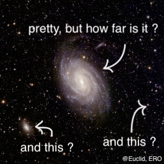
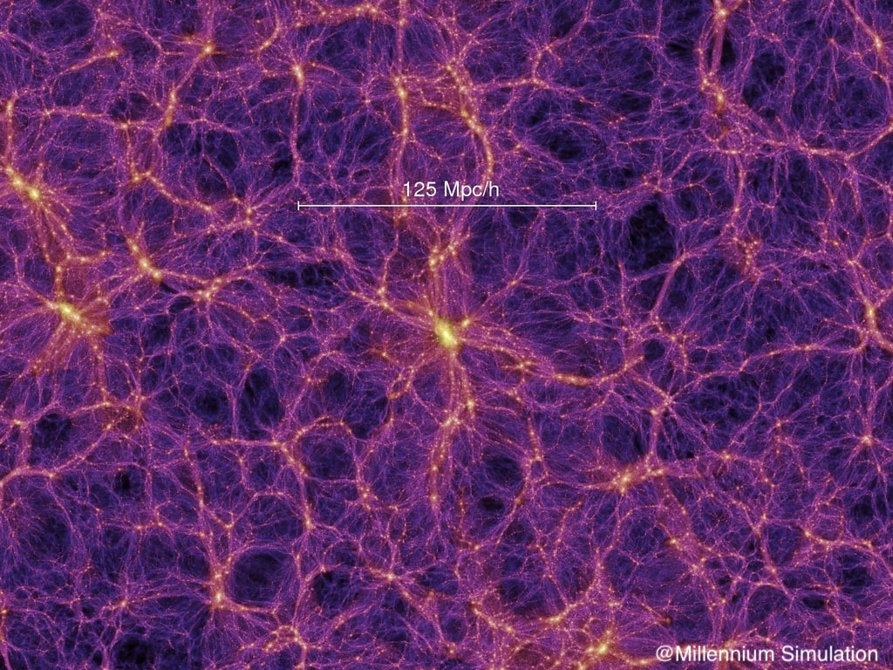

I am a PhD student in Physics in the Observational Cosmology group at IFAE in Barcelona. Before this, I studied at the École Normale Supérieure PSL in France, where I completed two master’s degrees, one in Mathematics and the other in Physics. During my time there, I tried to take advantage of the institution's incredible academic diversity, exploring other disciplines such as philosophy, and many different sports from rugby to modern dancing. I come from a small village of 600 people, Saint Antheme in Auvergne, France.
Since childhood, I’ve been passionate about science, particularly mathematics and astronomy. I aspire to dedicate my professional life to understanding the fundamental physical laws governing our universe. I’m equally drawn to the theoretical and conceptual questions we seek to answer, as well as the phenomenological aspects, where we test these theories against real data. It’s exhilarating to realize that the arrays I work with in Python correspond to millions of galaxies across the universe! Simple operations in code can provide insights into gravitational processes that unfold over billions of years—from the Big Bang to the present day.
In my PhD, I primarily focus on the clustering-redshifts technique for the Euclid and DES surveys.
 Since humans first pointed telescopes toward the skies, one fundamental challenge has been measuring the distances to celestial objects (e.g. to deduce the size of a planet, a nebula, or a galaxy). Early techniques, like geometric parallax, provided ways to measure nearby distances. Later, the concept of standard candles (objects with known intrinsic luminosity) allowed us to estimate distances for many more different objects.
The discovery of the universe's expansion leads to an even more powerful method: using the redshift of galaxy spectra. Galaxies are composed of stars whose spectral features we understand well. By measuring the redshift (the displacement of spectral lines toward the red end of the spectrum due to the expansion of the universe acting as a Doppler effect), and knowing the universe’s expansion history, we can deduce distances. While spectroscopic redshift-based measurements are highly accurate, they require obtaining spectra for individual galaxies, which is impractical for the hundreds of millions or billions of galaxies observed in upcoming photometric surveys like Euclid. Fortunately, we don't need precise distances for every galaxy; we only need the statistical properties of redshifts for groups of galaxies, such as their mean and standard deviation.
 This is where clustering-redshifts come into play. Galaxies are distributed across the universe in large-scale structures resembling a gigantic 3d network shaped by gravitational forces over time (the cosmic web, see the picture). Thus locally, galaxies' positions are not random, they are ordered with some gravitational patterns (clusters, filaments, walls...). These patterns trace the true distribution of matter, not limited to galaxies or baryonic matter, but including the mysterious dark matter. By analyzing these patterns for groups of galaxies at known distances (from spectroscopic samples, e.g., BOSS, eBOSS, DESI, 4MOST, Euclid), and comparing them to the patterns for galaxies with unknown distances, we can infer the distance of the latter. In practice, this involves deconstructing overlapping patterns to estimate their statistical arrangement. Very cool, isn’t it?
The method relies on computing the two-point angular correlation function between photometric and spectroscopic samples, binned by redshift. The amplitude of this cross-correlation provides information about the redshift distribution (the famous n(z)) of the photometric sample. Key challenges include correcting for galaxy biases, which describe how galaxies trace the matter field. These biases evolve with redshift, adding complexity to the problem. Additionally, magnification effects can alter the observed clustering patterns, as the positions of distant galaxies (and so the pattern) are affected by lensing from foreground structures.